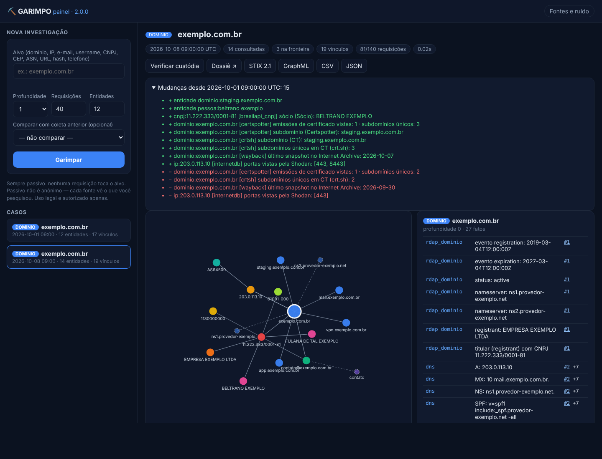
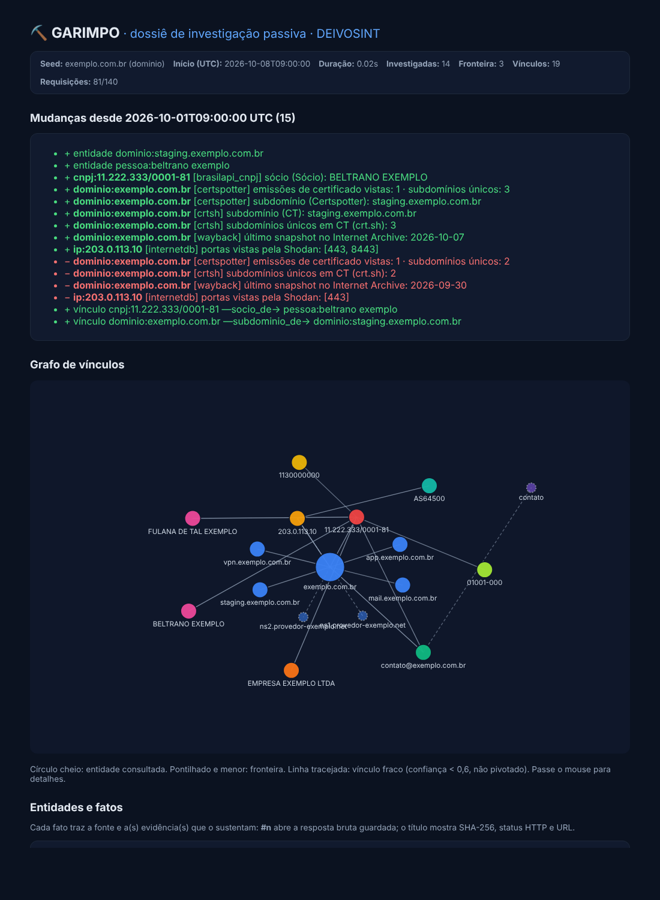

Versão 2.0.0 · motor de pivô OSINT passivo · 100% Python padrão · sem chaves de API · 28 fontes · painel web · servidor MCP · STIX 2.1 · monitoramento · cadeia de custódia forense · dossiê em português
Você entrega um ponto de partida — um site, um e-mail, um CNPJ, um usuário do GitHub, um IP — e o GARIMPO:
Novo na 2.0:
.br → CNPJ do titular (RDAP do registro.br) → sócios → endereço. NOVOTudo isso sem instalar nada além do Python que provavelmente já está no seu computador, e sem nenhuma chave de API.
cmd e pressione Enter para abrir o Prompt de Comando.python --version. Se aparecer Python 3.9 ou maior, pule para o passo 4.python.org/downloads, execute o instalador e marque a caixa "Add Python to PATH" antes de clicar em Install.C:\GARIMPO).lancadores\GARIMPO-Demo-Windows.bat. O dossiê de demonstração abre no navegador. Pronto. ✔GARIMPO-Painel-Windows.bat — o painel abre no navegador. (Pelo terminal: GARIMPO-Investigar-Windows.bat.)python3 --version. Qualquer 3.9+ serve. (Faltando: sudo apt install python3 ou equivalente da sua distro.)cd caminho/para/garimpo../lancadores/garimpo-demo.sh (ou python3 garimpo.py demo). O dossiê abre no navegador. ✔./lancadores/garimpo-painel.sh (ou python3 garimpo.py painel).python3 --version. O macOS oferece instalar as ferramentas de linha de comando se faltar — aceite.lancadores do GARIMPO.GARIMPO-Demo-macOS.command. O dossiê abre no Safari/Chrome. ✔chmod +x lancadores/*.command.GARIMPO-Painel-macOS.command — o painel abre no navegador. (Pelo terminal: GARIMPO-Investigar-macOS.command.)O GARIMPO desenhado como uma bancada de ensaio. O carro leva sua amostra (o seed) pelo trilho; cada estação é uma fonte pública; cada descida de êmbolo é uma requisição; cada frasco é uma evidência lacrada, presa ao anterior por um elo; o mostrador é o orçamento. Passe o mouse para guiar o carro.
Não carregou? Abra direto: manual/figura/garimpo-figura.html (tema claro: garimpo-figura-light.html).
jazida/python3 garimpo.py investigar exemplo.com.brÉ isso. Tudo abaixo é o que você vai ver acontecer:
⛏️ GARIMPO 2.0.0 · seed: exemplo.com.br (detectado: dominio) 1
caso: casos/2026-10-17_090000_exemplo.com.br · modo: PASSIVO 2
[0] DOMINIO → exemplo.com.br 3
→ [rdap_dominio] https://rdap.registro.br/domain/... 4
[rdap_dominio] titular (registrant) com CNPJ 11.222.333/0001-81
[dns] A: 203.0.113.10
[crtsh] subdomínio (CT): app.exemplo.com.br
[1] CNPJ → 11.222.333/0001-81 5
[brasilapi_cnpj] sócio (Sócio-Administrador): FULANA DE TAL EXEMPLO
[1] IP → 203.0.113.10
[ripestat_ip] origem BGP: AS64500 — EXEMPLO-AS
✔ 8 entidades consultadas · 4 na fronteira · 17 vínculos · 38 requisições · 6.1s 6
✔ Dossiê: casos/.../dossie.html
✔ Custódia: casos/.../ledger.jsonl[0] é a profundidade: 0 = o seed que você digitou.→ é uma requisição real; a linha diz a fonte e a URL exata.python3 garimpo.py investigar alvo.com --profundidade 2 --max-entidades 20 --max-requisicoes 50| Opção | Padrão | O que controla |
|---|---|---|
--profundidade | 1 | quantos saltos de pivô a partir do seed (2 já vai longe) |
--max-entidades | 12 | teto de entidades consultadas (a fronteira aparece no grafo, mas não gasta requisição) |
--max-requisicoes | 40 | teto duro de requisições HTTP — nunca é ultrapassado |
--paralelo | 4 | consultas simultâneas (cada site recebe no máximo ~3 por segundo) |
--exportar | — | exporta ao terminar: --exportar stix,graphml,csv |
python3 garimpo.py investigar clavis.com.br # domínio (.br usa o RDAP do registro.br)
python3 garimpo.py investigar 1.1.1.1 # IP → RDAP + portas/CVEs (InternetDB) + PTR
python3 garimpo.py investigar fulano@provedor.com # e-mail → Gravatar + DNS do domínio + pivôs
python3 garimpo.py investigar torvalds # username → GitHub público
python3 garimpo.py investigar 11.222.333/0001-81 # CNPJ → Receita (BrasilAPI): razão social, sócios
python3 garimpo.py investigar "529.982.247-25" # CPF → SÓ validação offline (decisão ética)
python3 garimpo.py investigar https://site.com/pag # URL → domínio + snapshot no Wayback
python3 garimpo.py investigar "(31) 99999-8888" # telefone BR → DDD/UF/tipo, só offline
python3 garimpo.py investigar 30130-110 # CEP → logradouro e coordenadas (BrasilAPI)
python3 garimpo.py investigar AS28573 # ASN → titular e prefixos anunciados (RIPEstat)
python3 garimpo.py investigar d41d8cd98f00b204e9800998ecf8427e # hash → conhecido? (CIRCL hashlookup)Ação única: dois cliques em GARIMPO-Painel-… (ou python3 garimpo.py painel). O navegador abre em http://127.0.0.1:8765. Primeira vez? Clique em Abrir a demonstração.

1 2 3 4 5 6 7 8 9Todo caso gera automaticamente, na pasta do caso:
| Arquivo | Para quê |
|---|---|
dossie.html | O relatório humano. Abra com dois cliques: métricas, mudanças (se comparado), grafo SVG, cada entidade com seus fatos — fonte à esquerda, evidência #n à direita (abre o arquivo bruto) — e a lista da fronteira. |
caso.json | O mesmo conteúdo legível por máquina — para alimentar outras ferramentas DEIVOSINT, planilhas ou scripts. |
ledger.jsonl | A cadeia de custódia (ver Custódia). |
evidencias/ | A resposta bruta de cada requisição, byte a byte, como chegou. |
diff.json | Só em monitoramento: o que mudou desde a coleta anterior. |
exportacoes/ | Só se você exportar: STIX 2.1, GraphML, CSV, JSON. |

1 2 3Ação única: repita a investigação apontando para a coleta anterior.
python3 garimpo.py monitorar exemplo.com.br --contra casos/2026-10-01_090000_exemplo.com.brO GARIMPO coleta de novo, compara entidade por entidade, fato por fato, vínculo por vínculo, e mostra:
Mudanças de 2026-10-01T09:00:00 para 2026-10-08T09:00:00 (seed exemplo.com.br): 15
+ entidade dominio:staging.exemplo.com.br 1
+ [cnpj:11.222.333/0001-81] [brasilapi_cnpj] sócio (Sócio): BELTRANO EXEMPLO 2
+ [ip:203.0.113.10] [internetdb] portas vistas pela Shodan: [443, 8443]
- [ip:203.0.113.10] [internetdb] portas vistas pela Shodan: [443] 3Para comparar dois casos que já existem: python3 garimpo.py diff CASO_ANTIGO CASO_NOVO (acrescente --json para usar em scripts). No painel: campo Comparar com coleta anterior.
monitorar por semana. O dossiê novo já abre com o quadro de mudanças no topo.python3 garimpo.py exportar casos/MEU-CASO stix graphml csv| Formato | Arquivo (em exportacoes/) | Abre em |
|---|---|---|
| STIX 2.1 | garimpo-stix21.json | MISP, OpenCTI, plataformas de CTI. Entidades viram objetos STIX (domain-name, ipv4-addr, autonomous-system, email-addr, identity, location…), vínculos viram relationships com confiança, e os fatos viram notes. IDs determinísticos: o mesmo domínio tem o mesmo ID em toda exportação. |
| GraphML | garimpo.graphml | Gephi, yEd, Cytoscape — para layouts e métricas de rede (centralidade, comunidades). |
| CSV | entidades.csv + vinculos.csv | Maltego (importação de tabela), Excel, LibreOffice, pandas. |
| JSON | garimpo-grafo.json | Seus scripts e outras ferramentas DEIVOSINT. |
MCP é o padrão que deixa assistentes de IA usarem ferramentas. Com ele, você pede em português ("investiga o domínio X e me diz quem é o titular") e o Claude chama o GARIMPO — e cita as evidências.
claude_desktop_config.json.python e barras duplas C:\\GARIMPO\\garimpo.py):
{
"mcpServers": {
"garimpo": {
"command": "python3",
"args": ["/caminho/para/toolsR/garimpo.py", "mcp", "--casos", "/caminho/para/toolsR/casos"]
}
}
}garimpo_* aparecem no menu de ferramentas. ✔claude mcp add garimpo -- python3 /caminho/para/toolsR/garimpo.py mcp --casos /caminho/para/toolsR/casos| Ferramenta | O que faz |
|---|---|
garimpo_investigar | investiga um alvo (profundidade, requisições e entidades com teto) |
garimpo_caso | lê um caso: fatos com fonte e evidência, fronteira e vínculos |
garimpo_comparar | o que mudou entre duas coletas |
garimpo_verificar | confere a cadeia de custódia |
garimpo_exportar | STIX 2.1, GraphML, CSV ou JSON |
garimpo_casos / garimpo_detectar / garimpo_fontes | listas e utilitários |
--casos. A IA propõe; você confere as evidências.Verificar um caso (faça sempre antes de entregar, e peça a quem recebeu que repita):
python3 garimpo.py verificar casos/2026-10-15_090000_exemplo.com.brResposta esperada: ✔ Cadeia de custódia ÍNTEGRA. Qualquer outra coisa lista exatamente qual linha/arquivo foi comprometido.
Gerada do próprio código (é o que python3 garimpo.py fontes imprime). Nenhuma toca a infraestrutura do alvo; todas são keyless.
| Fonte | Tipos | Nível | Envia para | O quê |
|---|---|---|---|---|
rdap_dominio | dominio | passiva | rdap.registro.br (.br) / rdap.org | 1 requisição ao servidor RDAP do registro — nunca ao alvo |
dns | dominio | passiva* | dns.google (DoH) | A/AAAA/MX/NS/TXT/SOA/CAA/DMARC via resolvedor público |
crtsh | dominio | passiva | crt.sh | lê o índice público de Certificate Transparency |
certspotter | dominio | passiva | api.certspotter.com | lê emissões de certificados já registradas (alternativa ao crt.sh) |
wayback | dominio | passiva | web.archive.org (CDX) | lê o índice do Internet Archive |
urlscan | dominio | passiva | urlscan.io (busca pública) | lê varreduras que terceiros JÁ fizeram; não submete nada |
rdap_ip | ip | passiva | rdap.org → RIR responsável | dono do bloco, país e contatos do registro regional |
internetdb | ip | passiva | internetdb.shodan.io | lê o índice EXISTENTE da Shodan; não dispara scan |
ptr | ip | passiva* | dns.google (DoH) | DNS reverso (PTR) |
ripestat_ip | ip | passiva | stat.ripe.net | prefixo anunciado e ASN de origem (dados de roteamento BGP) |
ripestat_asn | asn | passiva | stat.ripe.net | dono do sistema autônomo e quantidade de prefixos anunciados |
tor_saida | ip | passiva | check.torproject.org | baixa UMA vez por investigação a lista pública de saídas Tor e compara localmente |
email_local | offline | nenhum | separa domínio e parte local do e-mail | |
gravatar | passiva | gravatar.com | 1 requisição com o hash MD5 do e-mail (o dono não é notificado) | |
pgp | passiva | keys.openpgp.org | procura chave pública publicada (só e-mails verificados aparecem) | |
github | username | passiva | api.github.com | perfil público (60 req/h sem token) |
github_commits | username | passiva | api.github.com (eventos públicos) | e-mails de autor em commits públicos recentes |
keybase | username | passiva | keybase.io | contas e domínios PROVADOS criptograficamente pelo titular |
hackernews | username | passiva | hacker-news.firebaseio.com | perfil público do Hacker News (API oficial) |
brasilapi_cnpj | cnpj | passiva | brasilapi.com.br | dados públicos da Receita Federal (QSA, CNAE, endereço) |
brasilapi_cep | cep | passiva | brasilapi.com.br | logradouro e coordenadas do CEP (Correios e bases abertas) |
cpf_offline | cpf | offline | nenhum | SÓ valida dígitos e região fiscal — CPF nunca é consultado nem pivotado |
telefone_offline | telefone | offline | nenhum | país, DDD/UF e tipo de linha por regra de numeração |
documento_invalido | documento_invalido | offline | nenhum | formato de CPF/CNPJ com DV errado — nada é consultado |
url_host | url | offline | nenhum | extrai o host da URL |
wayback_url | url | passiva | archive.org (availability API) | snapshot mais próximo da URL no Internet Archive |
circl_hashlookup | hash | passiva | hashlookup.circl.lu | o arquivo é conhecido (NSRL e outras bases de software legítimo)? |
nota_pessoa | pessoa, organizacao | offline | nenhum | registra o nome no grafo; pivô por nome exige buscador (fora do modo keyless) |
passiva: terceiro que já tem os dados · passiva*: DNS via resolvedor público (os nameservers do alvo veem o resolvedor, não você) · offline: nada sai da máquina.
| Sintoma | Causa provável | Solução |
|---|---|---|
python3: command not found | Python não instalado ou fora do PATH | No Windows use python; senão instale pelo python.org marcando "Add to PATH" |
| Dossiê sai com poucas entidades e muitos "Nenhum fato" | Rede/firewall/proxy bloqueando as fontes | Abra o ledger.jsonl: linhas com "status_http": 0 trazem o erro exato por fonte. Teste a conexão e rode de novo |
| GitHub para de responder | Limite de 60 requisições/hora sem token | Espere 1 h ou reduza os pivôs de username |
| crt.sh demora muito | O serviço oscila sob carga | Normal; cada requisição tem timeout de 15 s e a investigação segue sem ele |
| CNPJ não traz dados | DV inválido (nem chega a consultar) ou BrasilAPI fora do ar | python3 garimpo.py detectar "SEU-CNPJ" precisa responder cnpj; depois confira o ledger |
| "Cadeia de custódia COMPROMETIDA" | Arquivo editado, movido ou corrompido depois da coleta | Isso é a ferramenta funcionando. Refaça a coleta; nunca edite nada dentro de evidencias/ |
| Acentos estranhos no Windows | Terminal sem UTF-8 | Use os lançadores .bat (já configuram chcp 65001 e PYTHONUTF8=1); a ferramenta também força UTF-8 na saída |
Detectou documento_invalido | Você digitou algo no formato de CPF/CNPJ, mas os dígitos verificadores não batem | Quase sempre é erro de digitação. Confira o número; nada foi consultado |
Telefone virou username ou pessoa | Menos de 10 dígitos (faltou o DDD) | Digite com DDD: (31) 99999-8888 ou +55 31 99999-8888 |
| Painel: "Host não permitido" ou página não abre | Acessou por outro endereço, ou a porta 8765 está ocupada | Use exatamente http://127.0.0.1:8765; ou outra porta: python3 garimpo.py painel --porta 8790 |
| Orçamento acaba rápido em domínios | Cada domínio consultado custa ~14 requisições (RDAP, 8 tipos DNS, CT×2, Wayback×2, urlscan) | Suba --max-requisicoes ou baixe --max-entidades; olhe a fronteira e investigue só o que importa |
| Claude não mostra as ferramentas do GARIMPO | Caminho errado no JSON do MCP ou o app não foi reiniciado | Teste o caminho no terminal: python3 /caminho/garimpo.py versao; depois feche e abra o Claude |
macOS: o .command não abre | Gatekeeper bloqueia scripts baixados | Botão direito → Abrir → Abrir (uma vez só) |
pip install..br de empresas.O GARIMPO nasceu da dissecação do OpenOSINT/OpenOSINT (~22 mil linhas, 100 módulos): manteve o passivo-por-padrão, a tabela de ruído e o orçamento rígido; corrigiu 9 lacunas (Brasil ausente, dependência de LLM/chaves, extração por regex frágil, proveniência sem forense, instalação pesada, fontes keyless ignoradas, relatórios sem pt-BR…). O estudo completo, lacuna a lacuna com evidência no código, está em docs/ENGENHARIA-REVERSA-OPENOSINT.md.
| Bateria | Resultado |
|---|---|
Suíte automatizada testes/test_garimpo.py (unittest, stdlib, offline) | ✅ 48/48 em Python 3.9, 3.11, 3.12 e 3.13 (~3 s) |
| — detecção (24 valores, incl. CEP e ASN) e normalização que deduplica grafias | ✅ |
| — custódia: íntegra, evidência adulterada, ledger forjado, registro removido, caso retomado, 40 gravações concorrentes | ✅ |
| — rede: teto duro, cache por URL, rastreio fato→evidência, erro de rede registrado na custódia | ✅ |
| — 20 testes de fontes contra fixtures no formato documentado (RDAP .br com publicIds, DNS completo, CT×2, urlscan, InternetDB, RIPEstat, Tor, OpenPGP com parser de pacotes, GitHub + commits, Keybase, Hacker News, Gravatar, CNPJ, CEP, hashlookup) | ✅ — inclusive "CPF nunca aparece nem pivota" |
| — motor: profundidade, confiança, fronteira, fonte quebrada não derruba, migração de casos 1.x, dossiê à prova de injeção | ✅ |
| — demo com o motor real + diff; STIX 2.1 (tipos, IDs, referências), GraphML válido, CSV, CPF nunca exportado | ✅ |
| — MCP de ponta a ponta (subprocesso stdio: initialize, tools/list, chamadas, path traversal, método inexistente, JSON inválido) | ✅ stdout só com JSON-RPC |
| — painel de ponta a ponta (HTTP real): API, CSP, exportação zip, evidências, investigação assíncrona; defesas: Host forjado, POST sem cabeçalho, formulário HTML, 4 tentativas de path traversal | ✅ todas bloqueadas |
| — CLI com saída forçada em cp1252 (cenário Windows) | ✅ |
| Fontes ao vivo | ⚠️ bloqueadas pelo firewall da sandbox (403 do proxy); cada falha fica registrada na custódia — validar na máquina local |
Rode você mesmo: python3 -m unittest discover -s testes -v. Detalhes e pendências: testes/RELATORIO-DE-TESTES.md.
(tipo, valor, relação, confiança) a partir do JSON da API; o pivô nunca interpreta texto renderizado.#seq) das respostas brutas da chamada que o produziu; o dossiê e o painel linkam o arquivo e mostram o SHA-256.@fonte(nome, tipos, nível, destino, descrição); a tabela de ruído sai do registro, nunca de um texto mantido à mão.status_http: 0 e a investigação continua.